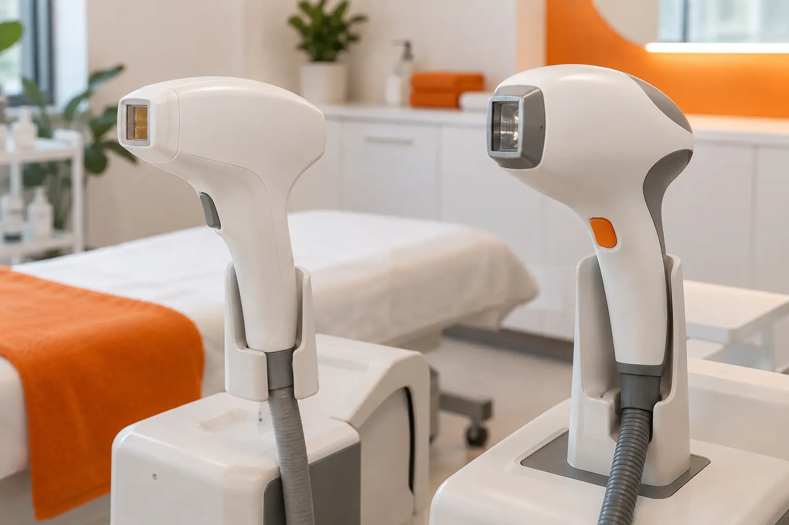

Lazeris ir IPL plaukų šalinimui: kuo skiriasi technologijos pavadinimai?
Autorius: Madbeauty redakcija · Numatyta 2026 m. gruodžio 15 d. 10:00 (Lietuvos laiku)
Lazeris ir IPL skiriasi šviesos šaltiniu bei jo spektru. Sužinokite, ką iš technologijos pavadinimo galima suprasti, o ką verta tikrinti konkrečiame pasiūlyme.

Lazeris ir IPL nėra tas pats pavadinimas dviem įrenginiams. Trumpai: lazerio šviesa yra labiau sutelkta ir siauresnio spektro, o IPL (intensyvi impulsinė šviesa) apima platesnį spektrą ir santykinai platesnį odos plotą. Tai šviesos savybių palyginimas, o ne įrodymas, kad vienas metodas visiems veiksmingesnis ar tinkamesnis.
Šį fizinį skirtumą taip aprašo ARPANSA vartotojams skirtas lazerio ir IPL palyginimas; agentūra lazerį, IPL ir LED taip pat išskiria kaip skirtingas šviesos technologijų grupes savo technologijų apžvalgoje. Šios nuorodos padeda suprasti terminus, bet nenustato konkretaus aparato saugumo, individualaus tinkamumo ar Lietuvos paslaugų taisyklių.
Šviesos šaltinis: trumpa palyginimo schema
- Lazeris — labiau sutelktas, siauresnio spektro šviesos šaltinis.
- IPL — platesnio spektro impulsinė šviesa, veikianti santykinai platesnį odos plotą.
- Fotoepiliacija — pavadinimas, kuris vienas pats nepasako, kokio tipo įrenginys naudojamas.
Ši schema neparodo aparato nustatymų, procedūros eigos ar rezultato. Ji skirta tik terminams atskirti; vien pagal ją negalima palyginti konkrečių paslaugų.
Kodėl svarbus konkretus įrenginys ir paslaugos aprašas?
Žodžiai „lazeris“, „IPL“ ar „fotoepiliacija“ neatsako, kokį įrenginį naudoja konkretus teikėjas ir kas įeina į vizitą. Lyginant pasiūlymus, ieškokite tikslaus įrenginio gamintojo ir modelio, šviesos technologijos bei gamintojo nurodytos paskirties. Taip pat atskirkite techninį pavadinimą nuo paslaugos apimties: kokia zona ir darbai įtraukti, ar nurodyta vieno vizito, ar kelių vizitų kaina ir trukmė.
Jei šios informacijos apraše nėra, tai nėra įrodymas, kad paslauga netinkama; tiesiog jos negalima patikimai palyginti pagal pavadinimą. Prašykite konkretaus modelio ir aiškaus paslaugos aprašo. Individualius nustatymus ar procedūros protokolą turi pagrįsti būtent tam įrenginiui taikoma dokumentacija ir teikėjo vertinimas, o ne bendras internetinis palyginimas.
Ko technologijos pavadinimas neįrodo?
- Kad viena technologija kiekvienam žmogui veiks geriau.
- Kad konkretus aparatas atitinka nurodytą pavadinimą ar yra tinkamas konkrečiam atvejui.
- Kad vizitų skaičius, trukmė, kaina ar rezultatas bus vienodi skirtingiems žmonėms ir skirtingoms zonoms.
Fizinis šviesos skirtumas nėra klinikinio veiksmingumo palyginimas. Todėl venkite pažadų apie garantuotą ar visam laikui pasiekiamą rezultatą, jei konkrečiam teiginiui nepateikti tinkami įrodymai.
Fotoepiliacija: tikrinkite metodą ir pasiūlymo apimtį
„Fotoepiliacija“ nusako plaukelių šalinimo paslaugą šviesos įrenginiu, tačiau pavadinimas savaime neidentifikuoja, ar naudojamas IPL, lazeris, ar kita technologija. Iliustracinis pavyzdys: jei viename meniu parašyta „plaukų šalinimas lazeriu“, o kitame — „fotoepiliacija“, palyginimą pradėkite nuo tikslaus įrenginio modelio ir jo technologijos. Tada sugretinkite tą pačią zoną, įtrauktus darbus, vizito trukmės aprašą ir tai, ar nurodyta vieno vizito, ar paketo kaina. Tai padeda palyginti pasiūlymus neapsimetant, kad vien pavadinimas pasako jų kokybę.
Šis gidas paaiškina technologijų terminus; jis nėra konkretaus teikėjo ar įrenginio rekomendacija.
Procedūrų aprašai kataloge: Fotoepiliacija, Plaukų šalinimas lazeriu. Miestą ir realaus teikėjo pasiūlymą pasirinkite kataloge, kai tokia pasiūla pateikta.
Susiję gidai
Šaltiniai
- AAD · lazerinis plaukų šalinimas · www.aad.org
- AAD · plaukelių šalinimo metodai · www.aad.org
- NVSC · grožio ir sveikatos paslaugų riba · nvsc.lrv.lt
- VASPVT · sveikatos paslaugų teisėtumo patikra · vaspvt.lrv.lt
- Era Esthetic: plaukų šalinimo lazeriu kainoraštis · lazerineklinika.lt
- Amber Esthetic: plaukų šalinimo zonų kainoraštis · www.amberesthetic.lt
- ARPANSA: lazerio, IPL ir LED technologijų grupės · www.arpansa.gov.au
- ARPANSA: vartotojams skirtas lazerio ir IPL palyginimas · www.arpansa.gov.au